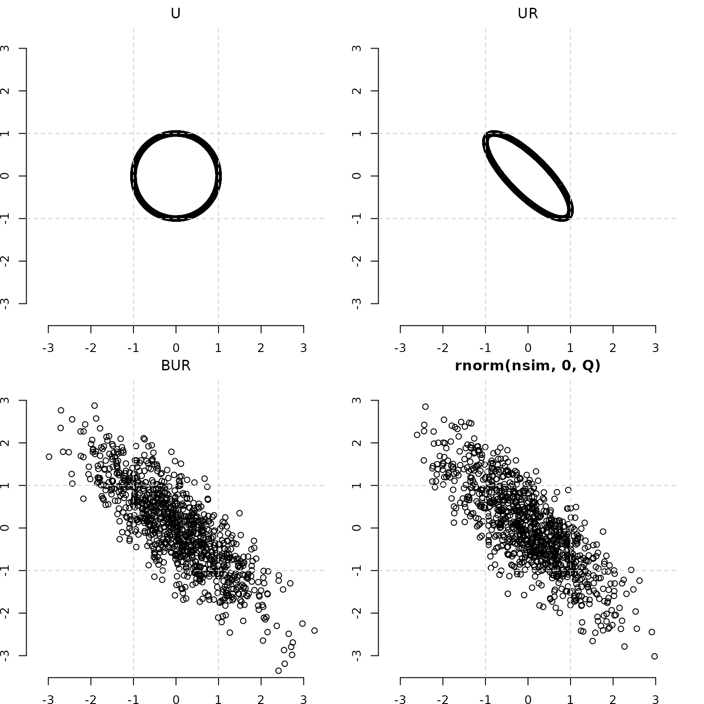

Introduction and Primer
Start with a unit circle. End with a Bivariate Normal.
Source:vignettes/articles/intro.Rmd
intro.Rmd- Start with a unit circle U.
- Apply A and make an ellipse UA.
- Scatter that ellipse by applying R to UA.
- RUA is a Bivariate Normal.

Notes:
- U is a
n x 2matrix containing n random draws from the uniform circle. - UA is the result of the matrix multiplication between
n x 2U and2 x 2A, the Cholesky decomposition of a2x2matrix Q.- Matrix A makes a circle (U) into an ellipse (UA)
- Matrix A can be thought of as a “square root” of a matrix. A’A = Q.
- When R is a
n x nmatrix with a random sample of sizenfrom a (df=2) distribution on the diagonal (and 0 off-diagonal), RUA is the bivariate normal distribution G(0,Q) (mvpduses the letter G to denote Gaussian). - Changing the distribution in R changes the multivariate distribution of RUA . That’s what this package is all about!
You can change the order of application of A and R – check out the other intro.